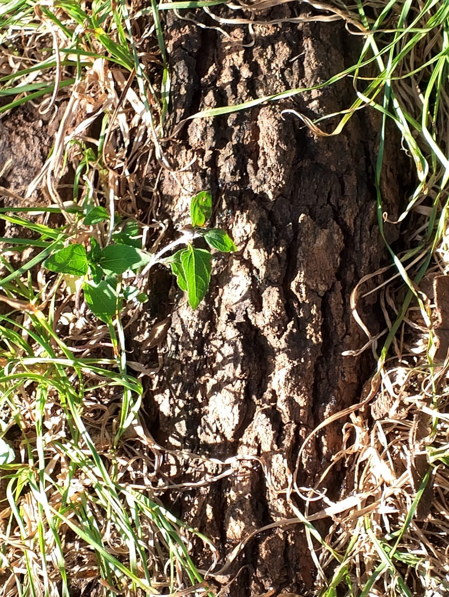
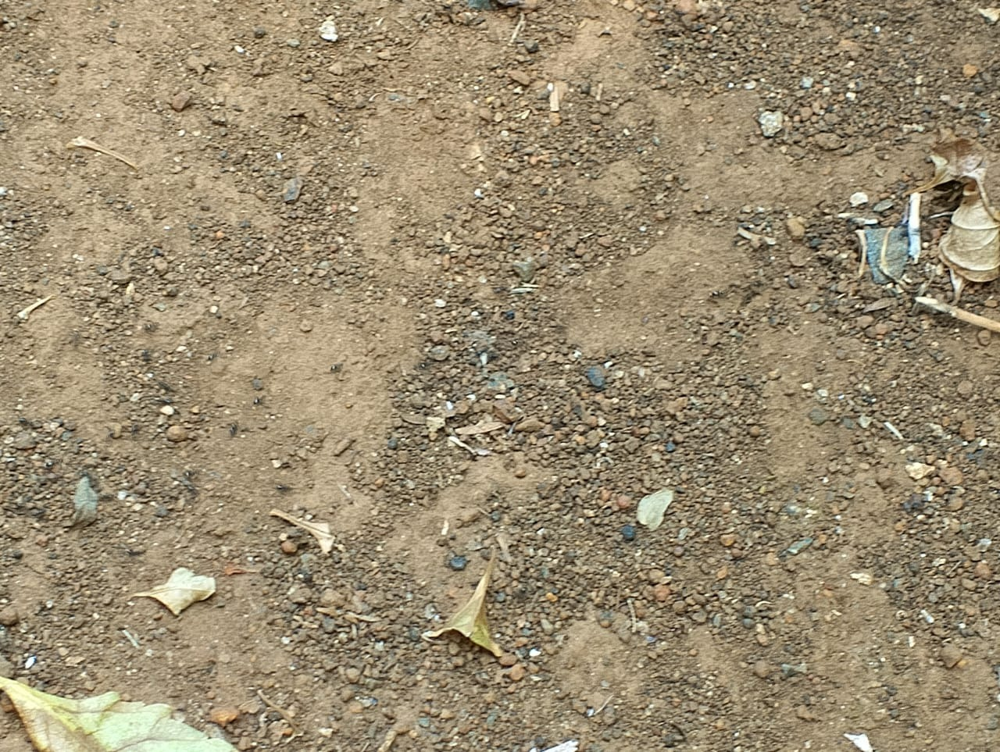
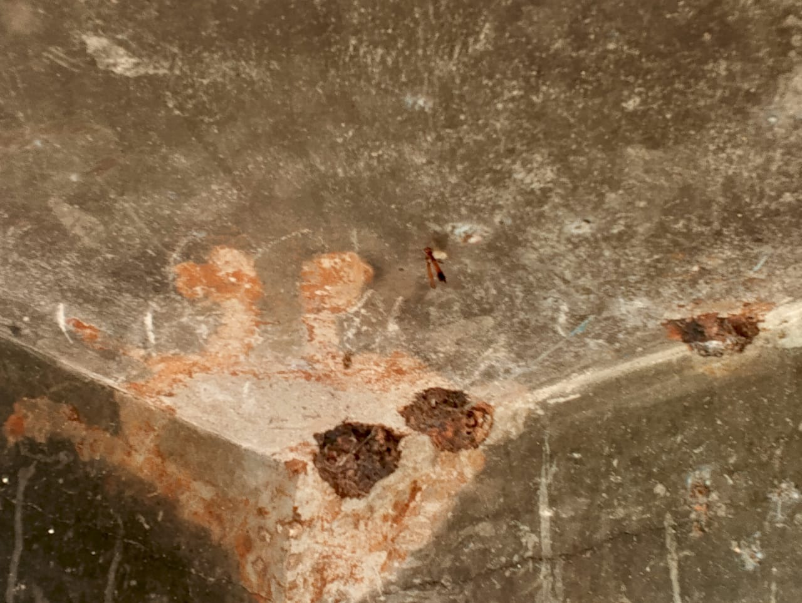

In-Situ Arthropod Research
At Kenyatta University, we investigate the fascinating world of arthropod habitats and behaviors within their natural ecosystems. Our research reveals the intricate relationships between species and their environments.
Research Findings
Habitat Analysis
Our observations reveal complex microhabitats formed on tree bark surfaces where various arthropod species establish intricate niches. The textured surface of indigenous trees provides an ideal environment for ant colonies, particularly during the rainy season when humidity levels remain consistently high.
Species Behavior
The documented foraging patterns demonstrate sophisticated communication networks among the observed ant colonies. Trail-marking behaviors were particularly notable, with clear evidence of pheromone-based navigation systems that optimize resource collection efficiency.
Adaptations
Morphological adaptations observed include specialized appendages for navigating vertical bark surfaces and defensive mechanisms that respond to environmental threats. The wasps demonstrated remarkable architectural skills in nest construction, utilizing available bark features.
Media Gallery
Ant Colony Activity (Vertical View)
Vertical footage capturing the complex vertical movements of ants on tree bark.
Wasp Behavior Study (Horizontal View)
Horizontal documentation of wasp nest-building behavior and social interactions.
Bark Exploration
Macro photograph of worker ant traversing bark ridges
Web Architecture
Intricate web structure integrated with tree surface
Ecosystem Overview
Kenyatta University forest ecosystem overview
Colony Structure
Colony formation and organization patterns
Conclusion & Insights
Our research demonstrates the remarkable complexity of arthropod ecosystems existing on the seemingly simple surface of tree bark. Several key findings emerged from our observations:
- Specialized micro-habitat utilization differs significantly between species
- Seasonal variations impact colony dynamics and foraging patterns
- Inter-species interactions reveal complex competitive and cooperative relationships
- Architectural adaptations show remarkable problem-solving capabilities
These insights contribute to our understanding of biodiversity within the Kenyatta University ecosystem and highlight the importance of preserving these natural environments for continued research and educational opportunities.
Our research team conducting field observations
Research Team
Simon Wandera
I72/5875/2023
Research Lead & Website Creator
Specializing in ant colony dynamics and foraging patterns observed in indigenous tree species.
+254 747 081576
Melvic Karanja
I72/1026/2024
Field Researcher
Focused on microhabitat analysis and environmental factors affecting arthropod distribution.
+254 791 937325

Jeremmy Otieno
I72/1066/2024
Data Analyst
Conducts statistical analysis of arthropod behavior and creates visual representations of findings.
+254 748 170164
Nelly Ann
I28/5606/2024
Documentation Specialist
Documents research findings through photography and detailed field notes for analysis.
+254 746 494103
"Through systematic observation and analysis of arthropods in their natural habitats, we gain valuable insights into ecological relationships and adaptation strategies."- KU Arthropod Research Team